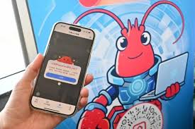

未來展望：AI代理養龍蝦的無限可能

相關影片：前端工程師失業倒數？AI 一句話就能生出整個網站
AI 時代千萬別唸資工系？不懂程式的人才後悔了！
AI 取代人類工作？專家：未來10年，這些職業將被淘汰
技術發展趨勢
2026-2030： AI代理與物聯網深度整合，實現全自動化養殖。
2030-2035： 引入量子計算，提升預測模型的準確性。
2035+： AI代理學習人類養殖經驗，創造創新養殖方法。
永續發展願景
資源節約： AI優化水資源和能源使用，降低環境負擔。
生態平衡： 智慧系統維護海洋生態平衡，促進生物多樣性。
全球合作： 國際共享AI養殖技術，解決全球糧食安全問題。
社會影響
AI代理養龍蝦不僅提升生產效率，還將改變傳統養殖業的就業結構，創造新的工作機會，並促進科技在農業領域的應用。